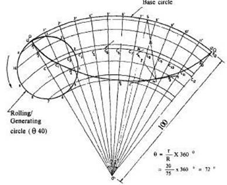

HYPOCYCLOID:
If the generating circle rolls inside the directing circle, the curve traced by the point in called hypo- cycloid.
· Draw a hypocycloid of a circle of 40 mm diameter which rolls inside another circle of 200 mm diameter for one revolution. Draw a tangent and normal at any point on it.
Construction:
1. Taking any point O as centre and radius (R) 100 mm draw an arc PQ which subtends an angle = 72° at O.
2. Let P be the generating point. On OP mark PC = r = 20 mm, the radius of the rolling circle.
3. With C as centre and radius r (20 mm) draw the rolling circle. Divide the rolling circle into 12 equal parts as 1,2,3 etc., in clock wise direction, since the rolling circle is assumed to roll counter clock wise.
4. With O as centre, draw concentric arcs passing through 1, 2, 3 etc.
5. With O as centre and OC as radius draw an arc to represent the locus of centre.
6. Divide the arc PQ into same number of equal parts (12) as 1', 2', 3' etc.
7. Join O'1,O'2 etc., which intersect the locus of centre at C1C2C3 etc.
8. Taking centre C1 and radius r, draw an arc cutting the arc through 1 at P1 . Similarly obtain the other points and draw a smooth curve through them.
To draw a tangent and normal at a given point M:
1. With M as centre and radius r = CP cut the locus of centre at the point N.
2. Join ON and extend it to intersect the base circle at S.
3. Join MS, the normal.
4. At M, draw a line perpendicular to MS to get the required tangent.

Figure